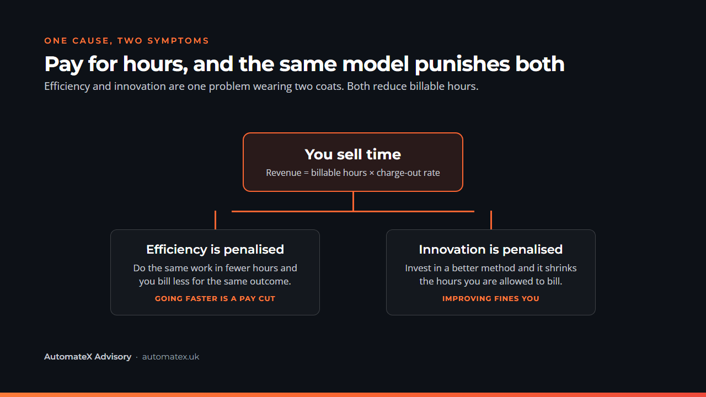
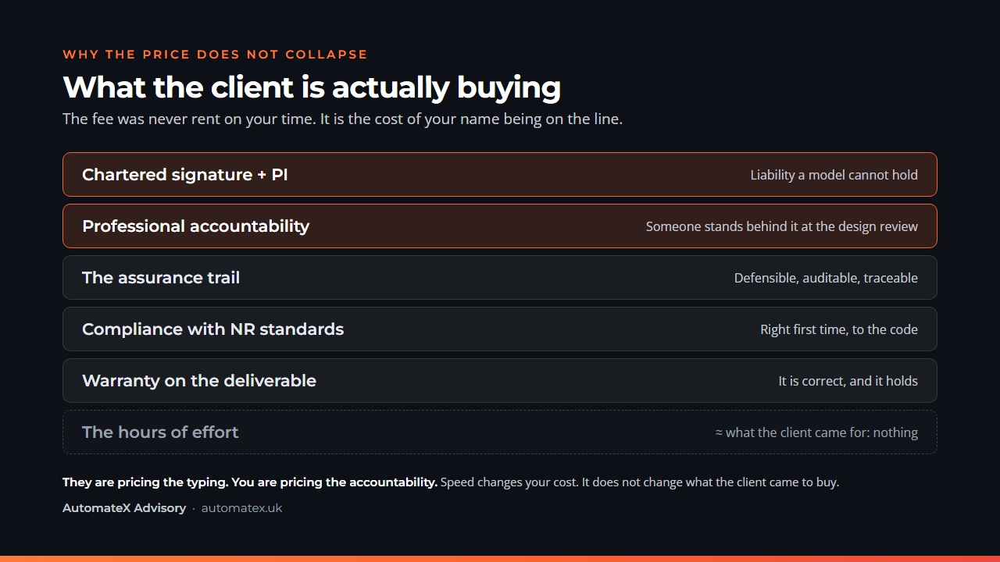

UK rail is not slow because its engineers are slow. It is slow because we pay them by the hour.
That sounds like a dig at the profession. It is really just arithmetic. Stay with me, because the same arithmetic is why the industry barely innovates either. They turn out to be the same problem. And it is fixable.
We bill by the hour
Every job is priced the same way. Scope it. Pick the team. Guess the hours. Multiply by a rate. Add the subcontractors. That is the price.
It is clean. It is auditable. It has run rail for decades. It also quietly punishes the two things every leader in the industry says they want.
On a framework the rate is fixed for you. You cannot move it. So your profit lives entirely in the hours. Hold that thought. The rest of this article is just that thought, followed to its slightly absurd conclusion.
So going faster is a pay cut
Two firms bid the same job. One needs 200 hours. One needs 120. On a rate card, the faster firm gets paid less for the identical result.
When you sell time, going faster is a pay cut.
Now point AI at that. AI is good at precisely the work that fills a timesheet. Drafting. Checking. Assembling the document. The Form G at eleven at night. It compresses the hours. On an hourly contract, compressing the hours means shrinking your own invoice.
So the industry has bought a tool whose entire job is to attack the thing it charges for. No wonder it feels like the tool is fighting us.
And it quietly kills innovation too
Follow that one more step, because this is the bit everyone misses.
Innovation, on the ground, is mostly just efficiency you paid for up front. A better method. A reusable model. A script that does in five minutes what used to eat a morning.
What does an hourly model do to that? The day your clever thing works, it shrinks the hours you are allowed to bill. You spent money and effort to reduce your own revenue. Well done.
The hourly model rewards standing still and fines you for getting better.
So the smart move, under pure time-billing, is to not improve. Keep it manual. Keep the hours up. That is not a shortage of imagination in rail. It is people reading the incentive correctly.
Which means efficiency and innovation were never two separate problems. They are one. Both make the timesheet smaller, and we have built an industry that quietly worships the timesheet.

The usual fix does not work here
Everyone's first answer is the same. Stop charging for time, charge for value. Price the outcome.
In rail that hits a wall on one question. What is it worth? The value to Network Rail of a good design is genuinely hard to put a number on. There is no neat profit line to point at, the way there is for a sales tool. With no number to anchor to, value pricing becomes a haggle with no floor and no ceiling. Few clients will sign that, and honestly they are right not to.
So the escape is not a leap to value. It is one small sidestep.
Sell the thing, not the time
Stop pricing the day. Price the deliverable.
Here is the part that feels like cheating. You already know the price. It is what that deliverable cost the client last year, on the old rate card, which they paid without blinking. Use that as your number.
Your cost to produce it has dropped, because the hours behind it have. You hold the price. The gap that used to be wages is now margin.
The rate card stops being your ceiling. It quietly becomes your anchor.
A word before you get smug about cheap AI
Remember when an Uber across town cost about the same as a sandwich? That was not generosity. Investors were paying for your ride to win the market. The price went up later. It always does.
AI tokens are the sandwich-priced Uber right now. Cheap because someone is buying market share, not because the compute is free. That meter will climb. So the AI runs its own little timesheet too, ticking away quietly in tokens.
Which is the real reason to anchor on the old value, not on today's bill. Price the deliverable at what it was always worth to the client. If you price it off this year's suspiciously cheap compute, you will be underwater the moment the free rides end.
But the AI did it in twenty minutes
Here comes the objection. If the client knows a deliverable popped out in twenty minutes, surely the price falls to nothing.
I have sat on the buying side. I never once asked how many hours a consultancy spent on a Form G. It was the least interesting number on the page. I asked one thing. Can I trust this, and put my name next to it.
So you were never selling the twenty minutes.

A language model cannot hold professional indemnity insurance. It cannot sign to a chartered standard. It cannot be sat in front of a design review at four in the afternoon to answer for a decision. You can. That is the bit that costs, and that is the bit that holds the price up.
You might worry you are charging for the typing. You are charging for the name on the line.
What flips
Watch what changes the moment you sell the deliverable instead of the day.
Speed stops being a punishment and starts being profit. The same team ships more work, not less. The dull admin hours shrink and nobody mourns them. The rework you used to quietly write off gets caught before it leaves the building.
Innovation flips with it. That clever method is no longer a hole in your own invoice. It is the thing that lets you deliver below the old price and still keep more of it. Efficiency becomes margin. Innovation becomes your edge.
Same work. Opposite sign. The only variable is what you put on the invoice.
Where to start
None of this means marching into a Tier 1 and announcing that the timesheet is cancelled. It is not. Frameworks run on the rate card and they are not changing this year. Do not die on that hill.
So go hybrid. Win the framework on the rate, because that is how you get a seat at the table. Then carve the repeatable, defensible deliverables out as fixed-price items inside the work, or out entirely as a product with its own price.
Start with one. Pick the deliverable your team grinds out most often, the most standard, the most repeatable. Price that one on the output. See what holds. The framework gets you in the room. The deliverable is where efficiency and innovation finally start paying you back, instead of billing against you.
One question
So, one question for anyone running a rail team or a rail business.
Look at your live contracts. Are you paid for hours, or for the things you actually deliver?
That single line decides whether the AI you are so excited about becomes a margin engine or a slow, expensive leak.
I would genuinely like to know where you land. Tell me which way your contracts lean, and why.